島根県立美術館で平山郁夫展を見ました。
2025/03/02
開館記念で無料だったので見に行きました。
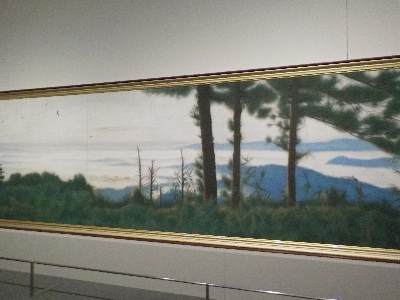
この絵は写真撮影OKだったので記念に撮りました。
色々な展示があり難しかったかな。
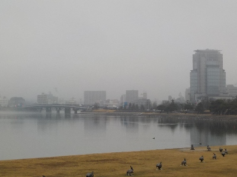
外は小雨だったんですが、いい雰囲気のある景色でした。
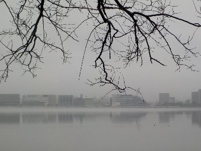
町が霧に包まれたような感じです。
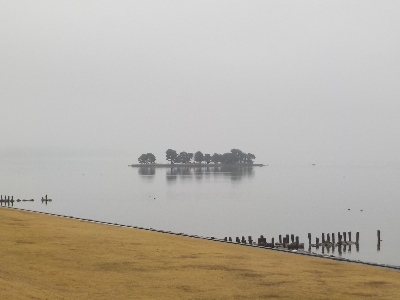
嫁が島が小さく見えました。なんか沈みそう。
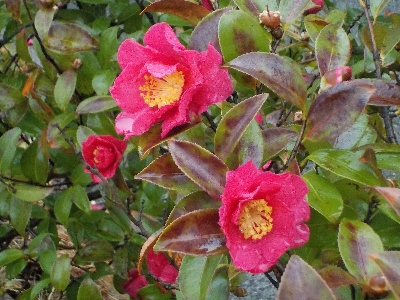
美術館の椿の生垣がキレイでした。
島根県松江市袖師町1-5
2025/03/02
開館記念で無料だったので見に行きました。

この絵は写真撮影OKだったので記念に撮りました。
色々な展示があり難しかったかな。

外は小雨だったんですが、いい雰囲気のある景色でした。

町が霧に包まれたような感じです。

嫁が島が小さく見えました。なんか沈みそう。

美術館の椿の生垣がキレイでした。
2024/11/23
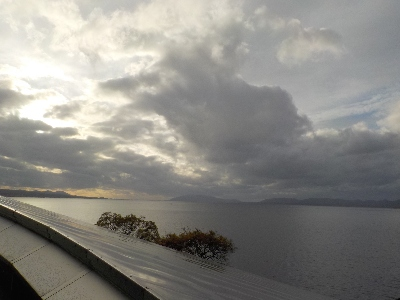
奈良原一高 ヴェネツィアの光と影を見に県立美術館に行きました。見たくて見に行っているので当然良かったです。
美術講座も受けて、いい時間を過ごせました。
島根県総合美術展がやっていたのでついでに見ました。期待していなかったですが、面白かったです。
楽しんで作品を作っているんだろうなと伝わってくるものが多くあり、なんか刺激があって良かったです。無料だし、機会があったら毎年見に行きたいと思いました。
2024/07/13
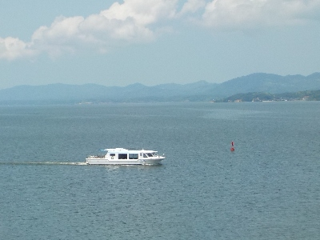
北斎コレクション第3期で、冨嶽三十六景 神奈川沖浪裏の展示があるので見に行きました。
天気も良かったのでいいレジャーになりました。
2024/03/03
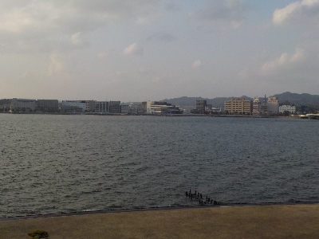
先週来たばっかりですが、無料なのでまた来ました。
企画展のTHE新版画 版元渡邊庄三郎の挑戦 常設展共に作品が多いので、何度見てもいいですね。
真ん中に新しい松江市役所がありますが、特に違和感がないです。上手く造られていますね。
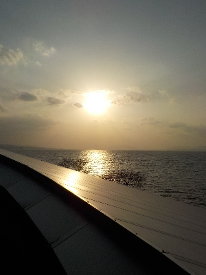
少し雲がかかっていますが、夕日が見れました。
ただの夕日なんですけどね。観光地で見ると特別な気分になります。
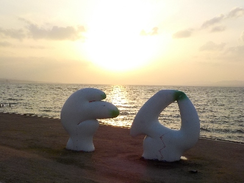
日の入り時間くらいには多くの人が集まっていました。
2024/02/24
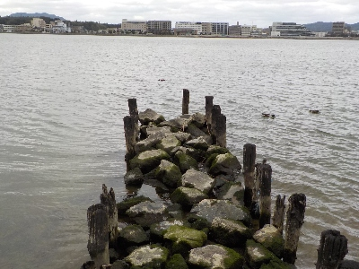
美術館で写真を見て、自分もあんな写真が撮れたらいいなと思いながら写真を撮りました。
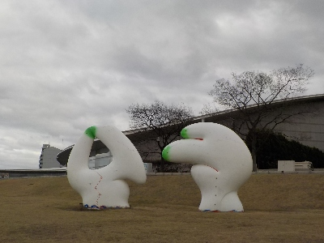
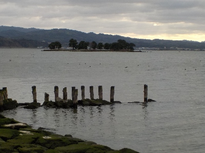
いい写真は私には撮れなかったです。
適当に思い出になる写真を今後も撮ろうと思います。
2023/09/09
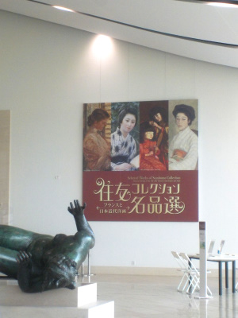
今日は美術鑑賞とロビーコンサートを楽しみました。
両方とも良かったです。いい時間が過ごせました。
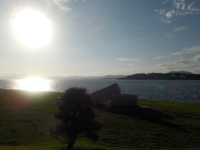
美術館の外に出たら日差しが凄く強かったです。
湖面に光が反射して眩しかったですけど、キラキラで美しかったです。
夕日じゃなくても十分いい景色です。
2023/08/11
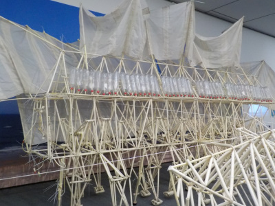
テオ・ヤンセン展は撮影OKです。
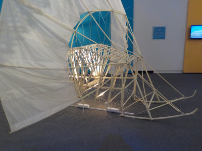
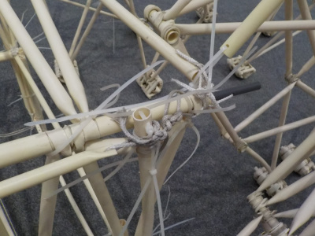
プラスチックの棒が結束バンドで止められています。
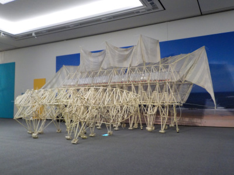
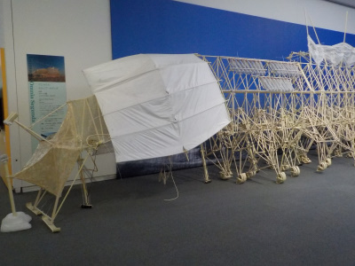
風の力で動く巨大なおもちゃだと思いました。動きが奇妙なので見ていて楽しかったです。
自でも作ってみたいと思いましたが、売店で販売している模型が3000円以上していたのでやめました。小さい子供がいたら買ったかな？
2019/03/03
今日はミュージアムデーで入館無料でした。
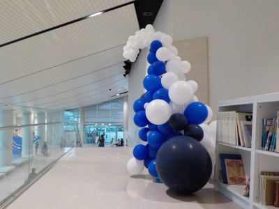
普通に朝とか昼に行ったら満員で、駐車場がないと思ったので夕方になる前くらいに行きました。
でも人が多かったです。
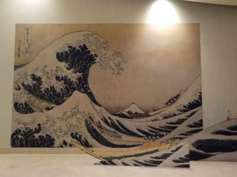
熱心に絵を見られる方が多く、絵に顔を近付けて見られていました。なので後ろから絵を見る事が出来ず、行列に並んで順番に見ないといけまでんでした。
疲れた。
北斎展は展示が多くありました。
色々見れて面白かったです。うん、面白いな。
これらが今後、常設展で見れるかもと思うと楽しみです。
2018/08/19
文化財の修復が精巧になることはいいことだと思います。
早く普及して欲しいですね。
私の入場料も何かの役に立つといいな。
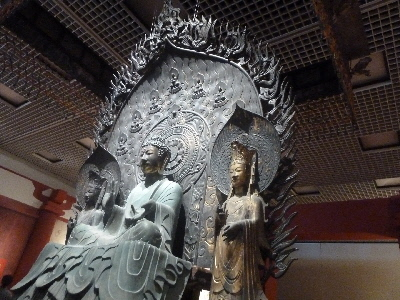
法隆寺 釈迦三尊像です。
クローンですが、本物とは両側の観音様の位置が違うそうです。こちらが本来の形で、本物は設置が間違っている可能性があるそうです。
上の方にあるトゲトゲした飾りは本物にはないですが、痕跡が残っているので想像で復元されています。
まんまコピーじゃないんですね。
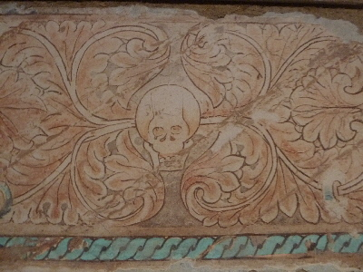
大きな壁画の一部です。このデザインかっこいいって思いました。
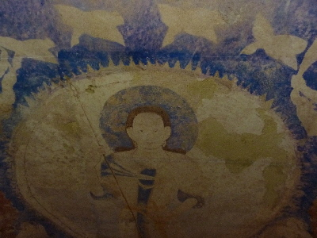
バーミヤンの遺跡はピカピカのクローンではなく、破壊されるまえの状態です。
こうゆうのが実在したんですねー。
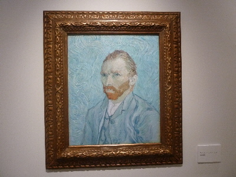
ゴッホの自画像です。
これが一番見たかったです。絵画のクローンてどうなの？本物そのままに出来るの？と興味がありました。
ですが、この絵はバックからゆらゆら揺れる光を当てられ、絵が動いて見えるようになっていました。
まったく別物になってて、期待していたものではありませんでした。
ちょっとがっかりして帰りました。
福岡市美術館・北九州美術館名品コレクションを見に行きました。
ダリの絵を初めて見たんですが、なんか凄いですね。
なんとも説明出来ないですが、見て良かったと思いました。
機会があったらダリの他の絵を見に行きたいと思いました
【以前の記事一覧】
2016/10/10
県立美術館のそばでミズベリング縁日やっていました。
2016/05/05
ゴールデンウィークですが、ポーラ美術館展は空いていました。
2014/11/03
県立美術館は夕日を見ている人が多かったです。
2013/08/11
島根県立美術館で「佐伯祐三」展を見ました。
2013/05/19
県立美術館の堂本印象展を見ました。
2011/03/13
県立美術館 春の大感謝祭。
2011/02/11
島根県立美術館のバレンタインコンサート。
2010/2/14
島根県立美術館の浮世絵遊覧「後期 広重特集」。
2010/1/17
島根県立美術館の浮世絵遊覧（北斎特集）。
2009/08/09
島根県立美術館の「橋本関雪展」。
2009/02/08
島根県立美術館の魅惑の近現代版画。
2008/09/21
島根県立美術館のエリックカール展。
2008/07/05
島根県立美術館の「江戸と明治の華展」。
2007/10/27
島根県立美術館のモディリアーニと妻ジャンヌの物語展。
2007/06/17
県立美術館の有元利夫展。
2007/05/04
ルソーの見た夢、ルソーに見る夢。
2006/10/29
島根県立美術館「田園への誘い」。
2006/05/28
島根県立美術館のミッフィー展。
2005/09/18
島根県立美術館のミュシャ展。
2005/08/20
島根県立美術館「サントリー美術館名品展」。